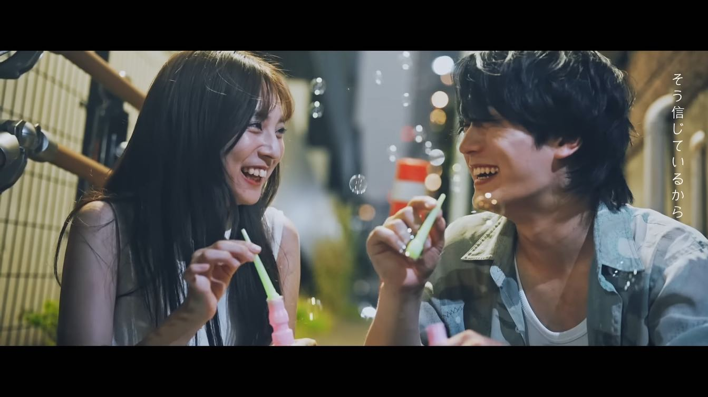
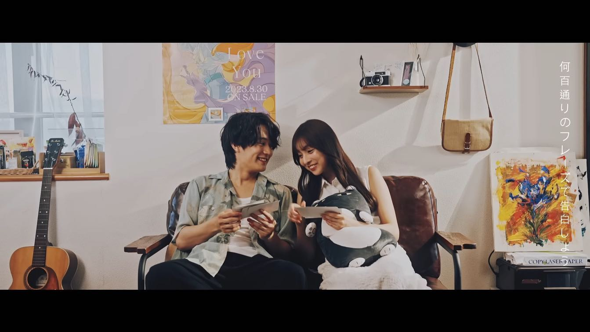
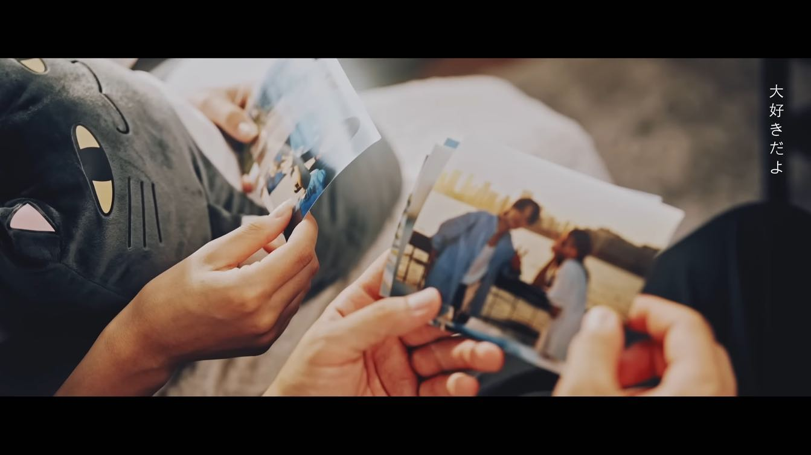
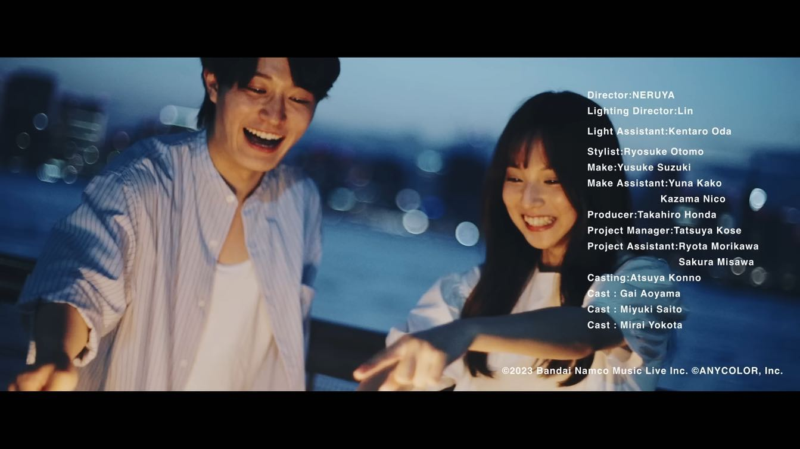

PRODUCTION STAFF / PHOTO
叶 「How Much I Love You」Music video





.
【works】
叶 「How Much I Love You」Music video
現場制作並びに一部劇用写真撮影担当として参加させて頂きました。
-------
credit
Director:ねる屋。
Lighting Director:Lin
Light Assistant:Kentaro Oda
Stylist:Ryosuke Otomo
Make:Yusuke Suzuki
Make Assistant:Yuna Kako/Kazama Nico
Producer:Takahiro Honda
Project Manager:Tatsuya Kose
Project Assistant:Ryota Morikawa/Sakura Misawa
Casting:Atsuya Konno
Cast:青山凱
Cast:横田未来
Cast:齋藤美雪